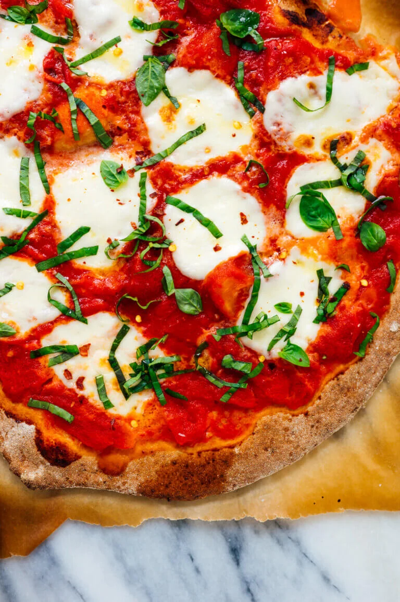

Ah yes pizza, another favourite for Italians.
This will be a pizza magherita.
Ingredients
- Pizza dough
- San Marzano Tomatoes
- Fresh Mozzarella Balls
- Fresh Basil
- Olive Oil & Salt
- Flanky sea salt
Steps
- Preheat the oven to 500 degrees Fahrenheit with a rack in the upper third of the oven. If you’re using a baking stone or baking steel, place it on the upper rack. Prepare dough through step 5.
- Place a medium mixing bowl in the sink and pour the canned tomatoes into the bowl, juices and all. Crush the tomatoes by hand. Spread about ¾ cup of the tomato sauce evenly over each pizza, leaving about 1 inch bare around the edges.
- If your mozzarella is packed in water, drain off the water and gently pat the mozzarella dry on a clean tea towel or paper towels. If you’re working with large mozzarella balls, tear them into smaller 1-inch balls. Distribute the mozzarella over the pizza, concentrating it a bit more in the center of the pizza, as it will melt toward the edges.
- Layer the lasagna according to the recipe instructions.
- Bake pizzas individually on the top rack until the crust is golden and the cheese is just turning golden, about 10 to 12 minutes (or significantly less, if you’re using a baking stone/steel—keep an eye on it).
- Top each pizza generously with fresh basil, followed by a light back-and-forth drizzle of olive oil, a sprinkling of salt, and red pepper flakes, if you wish. Slice and enjoy. Leftover pizza will keep well in the refrigerator for up to 4 days.
To top of page
To see all recipes, click this